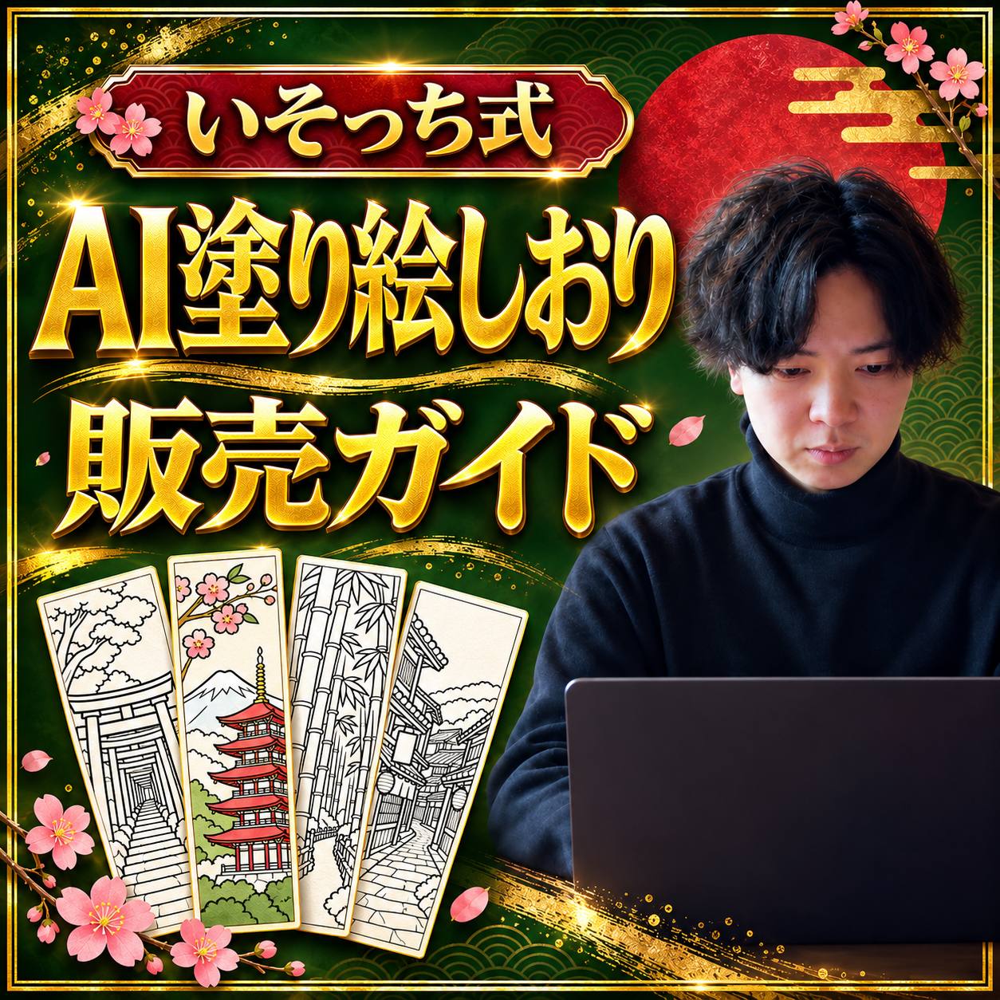
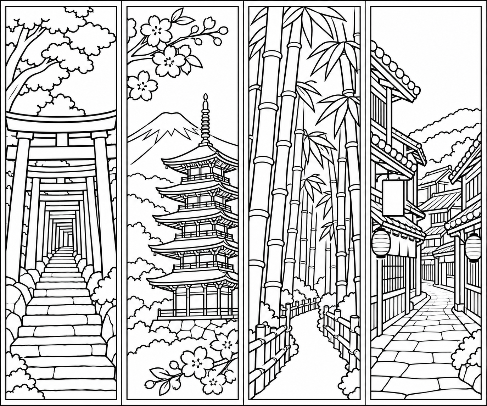
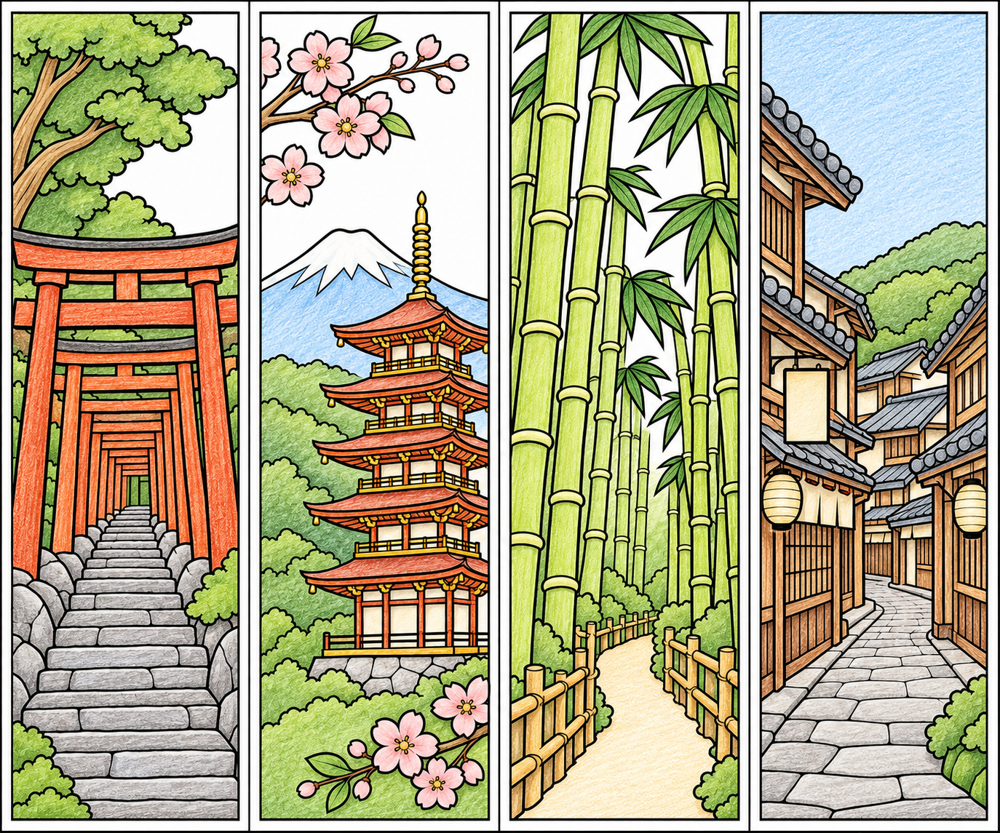

動画を受け取り次第、掲載します

絵と英語で止まる人へ。
しおりを出品できる形に。
AI副業をやってみたい。でも、何を作って、どう商品にすればいいか分からない。今回は、日本の風景の塗り絵しおりを4本。画像から印刷PDF、英語の商品名・説明文まで、一つずつそろえていきます。
「稼げる方法」より、
作るものを決める。

日本らしい風景。
「稼げる方法教えて」だけでは、まともな答えは返ってきません。日本好きの海外の人に向けて、何を売るかまで絞る。今回は、鳥居・五重塔・竹林・商店街でやってみます。
ここにあるのは練習用の作例。販売するときは、同じ手順で自分のオリジナル商品を作ってください。
① 画像を作る白黒の4本を、
チャッピーに作らせる。


ChatGPTを開き、下の指示文を入力欄へ送ります。出てきた画像を開いて、4本の枠と線を確認。気になるところは、その画像に続けて修正を頼みます。
塗り絵を作る指示文を開く
海外向けのデジタル商品として使う、塗り絵しおりの線画を作成してください。 【テーマ】日本の風景：千本鳥居、富士山と五重塔、竹林、木造の商店街。 4本を横一列に並べた1枚の画像。全体の縦横比は6:5。各しおりは幅45mm×高さ150mmを想定し、4本の幅は同じにしてください。 黒い輪郭線と白い背景だけ。影、灰色の塗り、文字、ロゴ、透かし、既存キャラクターは入れないでください。 奥行きのある自然な風景にしつつ、細かすぎる線を減らし、色を塗れる余白を残してください。各しおりの周囲に細い枠を付け、切り離す境界を明確にしてください。 実在の写真を撮ったと偽らず、オリジナルの日本風景のイラストにしてください。 まず画像を1案生成してください。指示文をTXTで保存
千本鳥居、富士山と五重塔、竹林、商店街
別の柄を作るなら、書き換えるのは【テーマ】。日本らしさが見える風景に替えてみてください。
線がおかしいとき・画像を保存するとき
鳥居の柱、屋根の重なり、竹のつながりを拡大します。塗れないほど細かい箇所や、切れた枠があれば場所を指定して修正。生成のたびに仕上がりは変わります。
この画像のテーマと4本構成は保ち、次の点だけ修正してください。 【修正する箇所】例：左端の鳥居の柱が途中で切れている。柱を自然につなぐ。 4本を同じ幅にそろえ、外枠を切らない。文字・ロゴ・灰色の塗りを追加しない。 修正後の画像を出してください。
採用した画像を開き、ダウンロードでPNGとして端末へ保存。スマホでは「ファイル」や「ダウンロード」の保存先を確認します。画像作成機能が利用できない場合は、対応する環境で同じ指示文を使います。
画像を、印刷PDFにする。
100% / Actual size
1本 約45×150mm
保存した線画を同じチャットへ添付し、PDF用の指示文を送ります。A4とUS Letterの2種類を保存して、両方とも開けるか確認してください。
印刷PDFを作る指示文を開く
添付した採用済みの白黒画像を、購入者が印刷できるPDFにしてください。 画像は4本横一列。全体の印刷サイズを幅180mm×高さ150mmにし、絵の内容を変えず、A4縦とUS Letter縦にそれぞれ中央配置してください。 ページには用紙名、100%/Actual sizeで印刷すること、4本の境界で切ること、50mmの定規線を英語で付けてください。画像は切り抜かず、文字で隠さないでください。 ファイル名はjapan-bookmarks-A4.pdf、japan-bookmarks-Letter.pdf。ダウンロードできる実ファイルを渡してください。 PDFを画像にして全体と線の欠けを確認し、元画像の解像度と印刷時の実効ppiを伝えてください。高解像度でないものを300dpiと表記しないでください。 ファイル作成機能が使えない場合は、作成できたと答えず、その旨を伝えてください。指示文をTXTで保存
両方とも同じ4柄。まず100%／実際のサイズで1枚印刷し、50mmの線を定規で測ります。家庭のプリンターでの試し刷りまで行ってから、販売用に整えましょう。
② 英語にする画像と中身を渡して、
商品名・説明文を作る。
画像だけでは、ファイルの種類やサイズまでは分かりません。できたPDFの中身も一緒に伝えて、英語にしてもらいます。
Coloring Bookmarks
同じ4柄／45×150mm
Digital download
No physical item
mount fuji art
bamboo coloring
英語出品文を作る指示文を開く
添付した塗り絵しおり画像と次の実物情報に合わせて、Etsy向けの英語出品原稿を作ってください。 商品：日本の風景の塗り絵しおり4本。千本鳥居、富士山と五重塔、竹林、木造の商店街。 購入者が受け取るもの：白黒のA4 PDF 1枚、US Letter PDF 1枚、英語の印刷ガイドTXT。両PDFの図柄は同じで、各しおりの仕上がり目安は45×150mm。 デジタルダウンロードのみ。印刷物・色鉛筆・色付き画像は含まれない。100%/Actual sizeで印刷して切る。 AIで作成した図柄であることを説明文に明記する。実際に使ったAIと自分の制作工程に合わせた正直な文にする。 出力：1)短く具体的な英語タイトル（140文字以内、15語未満を目安） 2)英語説明文 3)タグ13個（各20文字以内） 4)確認用の日本語訳。 収益・人気・著作権の独占・300dpi・手描きは主張しない。画像と資料から分からないことは質問し、創作しないでください。指示文をTXTで保存
今回の英語原稿を読む・コピーする
ENGLISH TITLE Japanese Landscape Coloring Bookmarks: 4 Printable Designs, A4 and US Letter PDFs DESCRIPTION Explore four Japanese-inspired scenes: a torii path, Mount Fuji and a five-storey pagoda, a bamboo path, and a traditional wooden shopping street. WHAT YOU RECEIVE - 1 A4 PDF page with four black-and-white bookmark designs - 1 US Letter PDF page with the same four designs - 1 TXT printing guide Each bookmark is approximately 45 x 150 mm (1.77 x 5.91 in) when printed at 100% / Actual size. The complete artwork block is 180 x 150 mm. The artwork has an effective resolution of approximately 194 ppi at this size. HOW TO USE Open the PDF that matches your paper size. Print at 100% / Actual size, check the 50 mm scale line, color the designs, and cut along the outer border and the three vertical boundaries. PLEASE NOTE This is a digital download. No physical item will be shipped. Colored examples, pencils, stands and other props are not included. Printer settings and paper may affect the result. The artwork was generated using AI from original prompts and arranged in printable layouts. It is an illustration of Japanese-inspired scenery, not a photograph of a specific place. For personal printing and coloring. Do not resell or redistribute the digital files. TAGS coloring bookmarks japanese landscape printable bookmarks torii gate art mount fuji art pagoda coloring bamboo coloring japan coloring digital download adult coloring paper craft reading accessory bookmark printable 日本語確認 日本風景の白黒しおり4本。同じ図柄のA4版とUS Letter版、および印刷ガイドTXT。実寸は約45×150mm。デジタルデータのみ。色付き見本・小物・印刷物は付属しない。AI使用を明記。個人での印刷・塗り絵用。データの再配布や転売不可。英語原稿と日本語訳を保存
英語もチャッピーに任せます。ただ、実物にないものまで書かせないこと。色付き見本は説明用で、買う人へ渡すのは白黒PDF。ここを合わせてください。
文字数とAI使用の表記を確認する
タイトルは140文字以内。タグは13個まで、各20文字以内。日本語訳で、図柄・枚数・用紙・サイズが合うか照合します。AI使用は説明文に明記し、実際に行った制作工程に合わせます。
Etsy公式：出品の作成 ／ タグの条件 ／ AI作品の基準
③ Etsyへ渡す見せる画像と、
渡すPDFを分ける。
出品へ渡すもの
自分のショップで、Listings → Add a listing。商品を「Digital files」にし、作った画像・英語原稿・購入用ファイルを入れます。
初めての出品：準備から公開前まで
- ショップ未開設なら、Etsyの販売登録を進めます。本人確認・決済情報・開設時の費用を自分で確認してください。
- カテゴリーを選び、商品の種類をDigital filesにします。制作時期やAI使用など、制作方法は実態に合わせて入力します。
- 購入者が受け取る線画そのもののプレビューを商品画像に入れます。使用例の小物が付属しないことも明示します。
- 英語の商品名・説明文・タグを該当欄へ。PDF2枚と印刷ガイドTXTをDigital filesへ追加します。
- 価格・通貨・税や更新設定など残りの必須項目を確認。今回はSave as Draftで保存して見直します。
- 自分で全ファイルを開き、購入画面の見え方と費用を確認。納得できたらPublishで公開します。
即時ダウンロードは最大5ファイル、各20MBまで。購入者向けにファイル名を分かりやすくします。Etsy公式：デジタル出品
AI作品も、自分の入力と制作への関与が必要です。この練習データをそのまま再出品せず、自分のオリジナルを作ってください。Etsy公式：商品画像の条件
出品にかかる費用を確認する
出品料は1件0.20米ドル。売れた場合は取引手数料6.5%に加え、決済手数料などもかかります。ショップ開設時の費用や税・広告・為替の条件は地域や設定で変わるため、画面の表示を確認してください。Etsy公式：手数料
慣れたら、
夜の作業を任せる。

「これ朝までにやっといて」
僕はこの手順をチャッピーに任せています。画像だけでなく、PDFと英語まで一つの仕事にまとめる。まずは1セットができるところから、同じ流れを通してみてください。
まず1回任せる指示文を開く
次の作業をまず1回だけ実行し、私の確認用のファイルを作ってください。 対象：日本好きの海外客に向けた塗り絵しおり。今回は【テーマ：千本鳥居、富士山と五重塔、竹林、木造の商店街】。 同じテーマで4本横一列の白黒線画1案を作る。全体6:5、各45×150mm想定。文字・ロゴ・既存キャラクター・灰色の塗りなし。 画像を確認し、線の破綻と枠の欠けがあれば修正する。画像を幅180×高さ150mmで配置したA4とUS LetterのPDF、印刷ガイドTXT、内容と一致する英語タイトル・説明文・タグ13個を作る。 タイトル140文字以内、タグ各20文字以内。AI使用を説明文に明記。色付き見本は購入ファイルに混ぜない。 利用できない画像生成・PDF作成機能があれば、実行済みとせず不足を報告する。 日付別のフォルダに保存し、作成ファイル名、テーマ、修正点、未確認点を報告。既存ファイルを上書きしない。 Etsyへの接続、出品、公開、課金、外部送信はせず、私の確認で止めてください。指示文をTXTで保存
繰り返しの予定を頼む文を開く
このチャットで確認した作業を、毎晩23:00（Asia/Tokyo）に実行する予定として登録してください。 入力、出力先、確認で止める条件は直前に確認した内容を使ってください。毎回新しい日付フォルダに保存し、出品・公開・課金・外部送信はしないでください。 登録後、予定名、時刻、タイムゾーン、次回実行時刻、入力と保存先を表示してください。必要な素材にアクセスできなければ、生成せず不足を報告してください。指示文をTXTで保存
予定を作る前に確認すること
ChatGPT Workで1回作業を通し、ファイルができてから予定化します。Scheduledで、時刻・タイムゾーン・次回実行・実行結果を確認。作業内容の変更や一時停止もここで管理します。
利用できる機能や予定は、プラン・ワークスペースで変わります。画像生成とPDF作成まで使えるかは、その環境で試してください。Webの予定はPCのローカルフォルダを直接使えません。素材はそのチャットから開ける場所へ置きます。PCのローカル作業を予定化するなら、PCとアプリを動かしておきます。
最初の一手は、
この4本を作ってみる。
- 白黒の画像と、開けるPDF2種類がある
- 英語の内容が図柄・枚数・サイズと合う
- 商品画像と購入用データの違いが分かる
- 自分の作品を1枚印刷して確かめた
ZIPを展開してguide.htmlを開くと、このガイドを手元で読めます。線画、印刷PDF2種類、英語原稿、指示文が入っています。練習データは個人での練習用。販売用は自分で生成・確認して作ります。
まずは①の指示文で1案。できたら、PDFと英語までつなげてみてください。
しおりを作れたら、
販売と自動化をもう一歩。

今回のしおりをどう売るか、同じ作業をどう任せるか。AI画像の販売方法・面倒な作業の自動化・AIで収益化する方法は、公式LINEでお配りしています。
いそっちの公式LINEで受け取る受け取りは無料です。